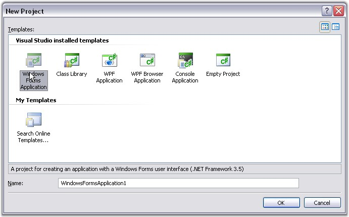
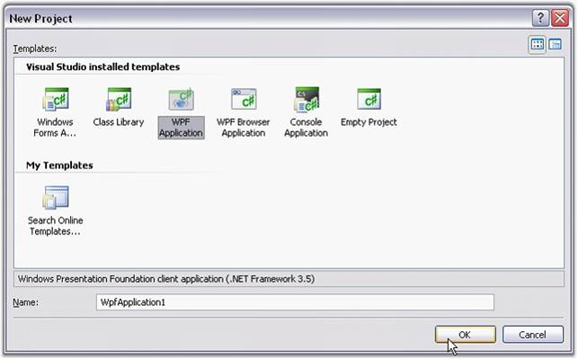

This section illustrates the step-by-step procedure to create the following platform applications.
Creating a Windows Application
1 Open Microsoft Visual Studio. Go to File menu and click New Project. In the New Project dialog, select Windows Forms Application template, name the project and click OK.

Figure 8: New Project Window
A windows application is created.
2 Now you need to deploy Essential Grouping into this Windows application. Refer Windows / WPF topic for detailed info.
Creating an ASP.NET Application
To know how to deploy a web application, refer the ASP.NET Behind the scenes section in the Getting Started guide of our Essential Studio documentation.
1 Open Microsoft Visual Studio. Go to File menu and click New Website. In the New Website dialog, select ASP.NET Web Site template, name the website and click OK.

Figure 9: New Web Site dialog box
A web application is created.
2 Now you need to deploy Essential Grouping into this ASP.NET application. Refer ASP.NET topic for detailed info.
Creating a WPF Application
1 Open Microsoft Visual Studio. Go to File menu and click New Project. In the New Project dialog, select WPF Application template, name the project and click OK.

Figure 10: WPF Application
2 A WPF application is created.
3 Now you need to deploy Essential Grouping into this WPF application. Refer Windows / WPF topic for detailed info.
For More Information Refer: